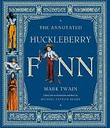

The annotated Huckleberry Finn : Adventures of Huckleberry Finn (Tom Sawyer's comrade)
Print Book
English, 2001
Publisher:
Norton, New York, 2001
Physical Description:
c 480 pages : illustrations, map ; 26 cm
Link of the book